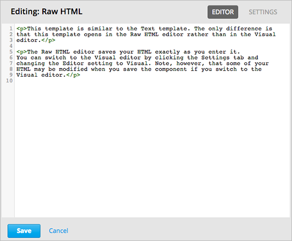

5.1. 如何使用HTML组件¶
5.1.1. HTML组件概述¶
HTML，即超文本标记语言，是构建网页的基本标记语言。 网页浏览器的功能就是将HTML编码以更可读的格式呈现。
也就是说，当学生看见您在课堂上发布的文本或图片时，实际上看的是浏览器格式化后呈现的HTML编码。 更多关于HTML的信息请参考维基百科。 Wikipedia.
HTML组件是您创建课程内容时的主要元素。 您可使用HTML组件添加并格式化文本、链接、图像等等。 您可以选择直接用HTML编码创建HTML组件，或者使用可视化编辑器，该工具会隐藏HTML编码的细节，这在后面的教程中会提到。
更多信息请参考以下章节：
Note
在开始创建HTML组件之前，请先回顾 Developing Your Course 和 最佳HTML标记方案 中的内容。
若想给HTML组件添加快速搜索框，参考 谷歌即时群聊工具 。
5.1.2. HTML组件编辑选项¶
您可以用以下两种方法操作HTML：
-
您可使用可视化编辑器，通过一个类似文字处理的界面创建、编辑或格式化课程内容，而不需要直接使用HTML编码。 使用该编辑器，您可以更方便地格式化内容，或给内容添加链接和图像。 同时，该编辑器支持HTML编码，因此可以在格式化的过程中作出细小的改变。 不过，视觉化编辑器与原始HTML编辑器不同，前者中的HTML无法进行细节控制，同时也不支持自定义格式化或自定义脚本。
-
在该编辑器中，您可直接使用HTML编码进行操作，同时可使用自定义格式化以及脚本模式。
5.1.2.1. 为HTML组件设置编辑器¶
您可在 设置 标签下为HTML组件设定一个编辑器：

选择 可视化编辑器 或 原始编辑器 。当更改编辑器时，需单击 保存 ，然后重新打开组件才能开始使用新的编辑器。
Warning
如果您原本在使用原始HTML编辑器，然后突然切换到可视化编辑器，那么您将丢失已经创建的自定义HTML内容。 因此，如果您需要创建自定义HTML内容，建议您先使用可视化编辑器，然后再切换到原始编辑器。
5.1.3. 可视化编辑器¶
可视化编辑器的处理界面有“所见即所得”的功能。您可单击编辑器顶部的格式编辑按钮以格式化文本。

Note
此编辑器不能用于 course handouts.
下图显示编辑器中的选项内容以及各项描述。
- 为选中的段落选择格式风格，如标题1、标题2，等等；
- 为选中的文本设置字体，如Arial, Courier New, Times New Roman等；
- 加粗；
- 斜体；
- 下划线；
- 文字颜色
- 以编码形式格式化文本；
- 插入项目符号；
- 插入项目编号；
- 添加/删除缩进符；
- 将选中段落设置为引用格式；
- 为选中的文本添加链接，详见“在HTML组件中添加链接”的内容；
- 删除当前链接；
- 在光标位置插入图像，详见 在HTML组件中添加图像.
- 使用HTML源代码，详见后文。
5.1.3.1. 在可视化编辑器中使用HTML代码¶
如需使用您在可视化编辑器中的课程源代码，在编辑器工具栏中单击 HTML ，会出现以下界面：

编辑即可。
请不要给编辑器中的HTML视图添加自定义风格或脚本。如果真的需要，请切换到原始HTML编辑器中操作。
单击 确定 关闭源代码编辑器，在可视化编辑器中应用更改后的内容。 可视化编辑器会尽量确保隐藏的HTML代码是有效的，比如，如果您忘记输入段落标记中的右括号，编辑器会自动帮您输入。
Warning
在源代码编辑器中单击 确定 不会保存您对HTML组件所作的更改。 您需要回到组件编辑器，然后在组件编辑器中应用更改后的内容，并且单击 保存 以保存更改，然后再关闭组件。 如果单击 取消 ，则对编辑器中HTML源代码所做的更改将丢失。
5.1.4. 原始HTML编辑器¶
如果您选择原始编辑器作为HTML组件的编辑器时，您将在一个文本编辑器中编辑内容：
您输入的HTML语言必须是有效的。原始HTML编辑器不会自动调整HTML代码。因此在课程中您必须反复调试HTML的内容。
5.1.5. HTML组件模板¶
当创建新的HTML组件时，您需要选择组件模板：

“原始HTML”模板默认为使用原始HTML编辑器，其他模板使用可视化编辑器。
您也可以自主更改所有模板的编辑器。详见 `Set the Editor for an HTML Component`_.
5.1.6. 创建HTML组件¶
如何创建HTML组件：
- 在 添加新组件 菜单下，单击 html 。
选择模板
接下来的教程假设您选择的是 文本 模板。选择后，会在编辑器中创建一个空组件。
如图，单元下方出现了一个空组件：
在该组件中，单击 编辑 。
可视化编辑器打开的HTML组件：
输入内容并设置好格式。如有需要，请参考 在可视化编辑器中使用HTML代码 。
输入HTML的展示名（即想让学生看见的名称）。 单击右上角的 设置 选项，在 展示名 字段输入内容。
再单击右上角的 编辑 返回组件界面。
单击 保存 以储存HTML组件。
您还可以使用可视化编辑器：
5.1.7. 在HTML组件中添加链接¶
如使用可视化编辑器在HTML组件中添加指向网站、课程单元或文件的链接，您需要打开 插入链接 对话框。

您可以：
5.1.7.1. 添加网页链接¶
如何添加网页链接：
选中您想要添加链接的文本
单击工具栏中的“链接”图标
打开“插入链接”对话框，在“URL”字段后键入指向网页的URL。
如果想在新窗口中打开链接，单击“目标”字段后的下拉箭头，选择“新窗口”。如不需要，保留默认设置即可。
单击“确定”。
保存HTML组件。.
点击 查看在线版本 或 预览 测试链接。 单元在LMS中打开以后，点击链接查看URL是否正确。
注意如果您的链接指向课程中的另一个HTML组件，所指向的单元必须为已发布状态，链接才有效。
5.1.7.2. 添加课程单元链接¶
您可在HTML组件中添加课程链接：
获取链接目标单元的单元标识符。在工作室中打开“单元”界面，在面板右侧打开“单元位置”，复制“单元标识符”字段后的单元ID。
打开您想要添加链接的HTML组件。
选中想要添加链接的文本。
单击工具栏中的“链接”图标。
打开“插入链接”对话框，在“URL”字段后输入以下内容：
/jump_to_id/<unit identifier>以上代码中的<unit identifier>即第二步中复制的单元ID（包括角括号），注意，所有“/”字符都要保留。
Caution
确保您的URL值为
/jump_to_id/<unit identifier>格式。 不要使用浏览器地址栏中的地址。 如果您没有使用/jump_to_id/<unit identifier>格式，您在导入和导出操作时链接将会失效。
- 如果想在新窗口中打开链接，单击“目标”字段后的下拉箭头，选择“新窗口”。如不需要，保留默认设置即可。
- 单击“确定”。
- 保存HTML组件，调试链接。
5.1.7.3. 添加文件链接¶
您可以添加任何已上传至课程中的文件链接。 更多细节请参考 给课程添加文件.
Tip
您在HTML组件中添加的链接可以指向任何已经上传的课程文件。 更多关于上传文件的信息请参考“添加课程文件”一节的内容。
- 在“文件与上传”界面，复制文件的“嵌入URL”。
Note
链接到文件必须使用文件的“嵌入URL”，而非“外部URL”。
选择想要添加链接的文本。
单击工具栏中的“链接”图标。
打开“插入链接”对话框，在“URL”字段后输入以下内容：
/static/{FileName}.{type}记住，保留所有“/”字符。
如果想在新窗口中打开链接，单击“目标”字段后的下拉箭头，选择“新窗口”。如不需要，保留默认设置即可。
单击“插入”。
保存HTML组件，调试链接。
5.1.8. 在HTML组件中添加图像¶
使用可视化编辑器时，您可以给HTML组件添加已经上传的课程图像。 更多关于上传图像的信息请参见 给课程添加文件.
在给HTML组件添加图像之前，请先回顾 最佳图像描述方案 一节的内容。
Note
确保您拥有引用图片的使用权，并正确引用图片。
要添加图像，首先需要您上传图像文件的URL，然后才能添加图像链接。
Tip
当您添加图片时，打开HTML组件和 文件与上传 页面。您可以更高效地操作。
- 在 文件与上传 页面，复制图片的URL。具体事例请参照 添加文件链接.
Note
添加链接时只能使用文件的“嵌入URL”，而非“外部URL”。
- 在HTML组件中点击需要添加链接的图片按钮。
- 打开“插入链接”对话框，在“URL”字段后输入以下内容：
/static/{FileName}.{type}记得保留所有“/”字符。
在 图片描述 中填入内容。 此内容将是``alt``属性的值。必须输入此内容课程才有完全访问性。 更多信息请参考 最佳图像描述方案 for
您可以自定义图像尺寸。在“固定比例”项后挑勾，以确保图片的长宽比例为固定值。
选择 固定比例 之后，您只能改变长或宽中的一项。另一项将按相同比例改变。
如要改变图片间距和边界，单击“高级”选项卡
键入“垂直间距”、“水平间距”及“边界”。您输入的数值会自动添加到“风格”字段中。
单击“确认”，完成图片在HTML组件中的插入。
保存HTML组件，调试图片链接。
5.1.9. 在HTML组件中输入拉泰勒编码¶
您可在HTML组件中通过输入拉泰勒编码以创建“美观的数学公式”，如图：

Warning
EDX工作室使用拉泰勒编码处理器将拉泰勒编码转换成可扩展标示语言，该处理器是第三方工具，建议您在使用前务必小心谨慎。如果您确实真的需要使用，请与项目经理取得联系。
本功能系统并不默认激活，要激活该功能，需更改课程的高级设置。
如何创建包含拉泰勒编码的HTML组件：
- 激活课程的构建函式
- 在Studio中，单击“设置”>“高级设置”
- 在 Enable LaTeX Compiler 值中 ，将勾选 是 。
- 在页面底部，单击“保存更改”。
- 在您希望创建HTML组件的单元中，单击“添加新组件”菜单下的“html”，然后单击“E-text Written in LaTeX”，新组件就会添加到单元中。
- 单击“编辑”，打开新组件编辑器。
在编辑器中，单击“Launch Latex Source Complier.”打开拉泰勒编码编辑器。
写入需要的拉泰勒编码。您可点击右下角的“上传”按钮从电脑中上传拉泰勒编码文件。
完成上一步骤后，单击左下角的“Save & Compile to edX XML”以保存。
关闭编辑器。您现在可以看见您的拉泰勒编码内容。

在单元界面中，单击“预览”确认内容是否与您将上传到LMS的内容形式一致。
如果发现错误，回到单元界面，单击“编辑”再次打开组件，单击组件编辑器左下角的 Launch Latex Source Complier 以再次编辑拉泰勒编码。